6 Le tableau périodique
- Décrire comment les éléments sont organisés dans le tableau périodique donnant lieu à des périodes, des familles et des groupes.
- Décrire les caractéristiques ondulatoires de la lumière (fréquence, la longueur d’onde et énergie) et les régions générales du spectre électromagnétique.
- Décrire la relation entre la longueur d’onde, la fréquence et l’énergie d’une onde électromagnétique.
- Décrire comment la matière interagit avec les rayonnements électromagnétiques et mène aux spectres d’absorption et d’émission.
- Repérer les éléments sur le tableau périodique et les classer en métaux, non-métaux ou métalloïdes.
- Décrire la répartition des électrons en couches, sous-couches et orbitales autour du noyau atomique.
- Prédire les configurations électroniques complète et simplifiée d’un élément grâce au tableau périodique.
- Identifier les électrons de valence d’un atome et leurs correspondance avec les différents groupes du tableau périodique.
- Représenter la structure de Lewis d’un atome donné.
- Définir les termes ions, cations et anions.
- Utiliser la règle de l’octet pour prédire l’ion stable que formera un élément du bloc principal.
A la fin du 18ème siècle, Lavoisier a compilé une liste des 23 éléments connus à l’époque. En 1870, on en connaissait 65, et 88 en 1925. Aujourd’hui, on en dénombre 118.
Les chimistes ont regroupé les éléments de sorte à ce qu’ils n’aient pas à mémoriser individuellement les propriétés de chaque élément. Dans leurs tentatives de classification, plusieurs chercheurs ont remarqué des récurrences, ou périodes, dans leur classification.
6.1 La classification périodique
En 1871, le chimiste russe Dmitri Mendeleev (1836-1907) a présenté le premier tableau périodique. Il a classé les éléments par masse atomique croissante et il a ensuite organisé les éléments avec des propriétés chimiques similaires dans la même colonne.
Plus tard, le tableau périodique moderne a été introduit. Il classe les éléments par numéro atomique et non par masse atomique, mais le principe est le même que le classement de Mendeleev.
Chaque case du tableau représente un élément différent et contient au moins trois informations:
- le symbole de l’élément
- le numéro atomique de l’élément
- la masse atomique de l’élément
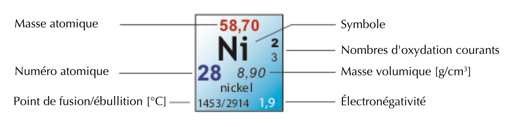
Le tableau périodique contient souvent des informations supplémentaires sur les éléments, il peut contenir des couleurs différentes ou il peut être écrit dans différentes langues, mais la structure de base du tableau reste la même.
6.1.1 Métaux, non-métaux, métalloïdes
Si aujourd’hui, 86 métaux sont présents dans le tableau de Mendeleïev, seuls sept d’entre eux étaient connus et isolés jusqu’au Moyen Age :
| élément | découverte |
|---|---|
| or | 6000 av. J.-C. |
| cuivre | 4000 av. J.-C. |
| argent | 3500 av. J.-C. |
| plomb | 3500 av. J.-C. |
| étain | 3000 av. J.-C. |
| fer | 1500 av. J.-C. |
| mercure | 750 av. J.-C. |
Les métaux sont solides à température et pression ambiante, à l’exception du mercure qui est liquide. Ils ont une apparence brillante et sont de bons conducteurs de la chaleur et de l’électricité. Ils sont malléables et ductiles.
Les éléments B, Si, Ge, As, Sb, Te, Po et At sont appelés métalloïdes. Les métalloïdes ont les propriétés des métaux et des non-métaux. Leurs propriétés électriques inhabituelles sont employée dans l’industrie des semi-conducteurs et en fabrication informatique.
Le reste des éléments, à droite des métalloïdes, sont appelés non-métaux. Les non-métaux ont des propriétés qui sont souvent opposées à celles des métaux. Certains sont des gaz, ils sont de mauvais conducteurs de la chaleur et de l’électricité, ils ne sont ni malléables, ni ductiles.
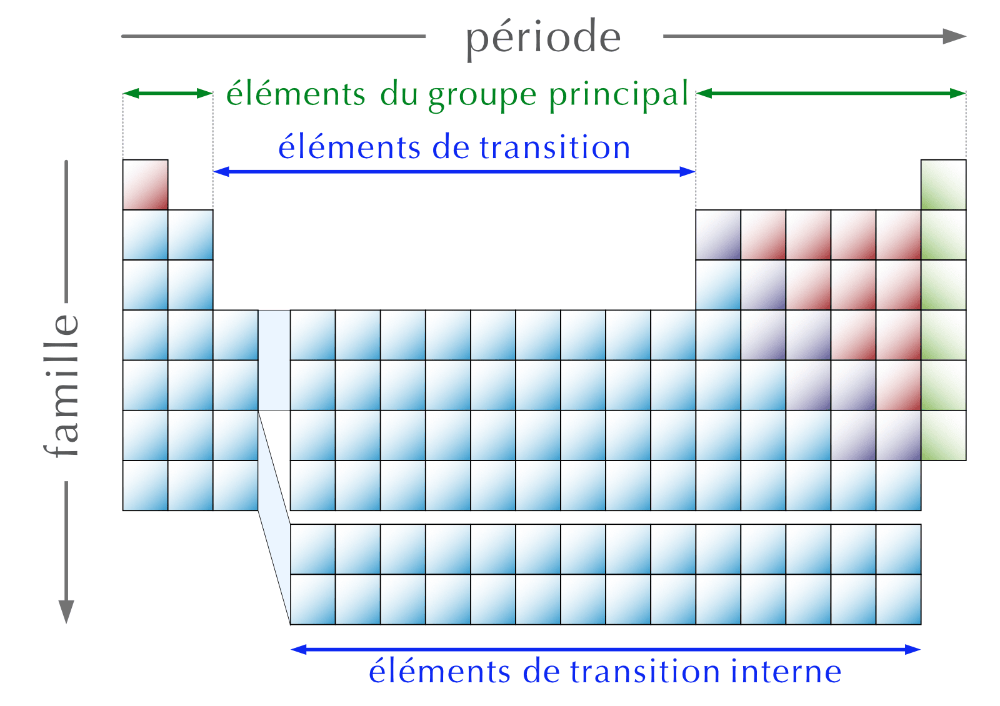
Classez chacun des éléments suivants en métal, non-métal ou métalloïde.
- le fer (Fe)
- le silicium (Si)
- le soufre (S)
- le sodium (Na)
- le germanium (Ge)
- l’oxygène (O)
- fer : métal
- silicium : métalloïde
- soufre : non-métal
- sodium : métal
- germanium : métalloïde
- oxygène : non-métal
6.1.2 Les périodes
Les lignes du tableau périodique sont appelées périodes et chacune est désignée par un nombre de 1 à 7 (première période, deuxième période, etc.). Le nom de tableau périodique provient du fait que les propriétés reviennent périodiquement à chaque fois qu’on change de ligne.
Le tableau périodique regroupe les éléments par période, mais les propriétés chimiques des éléments d’une même période sont différentes. Le classement par période représente l’arrangement des électrons au sein des éléments.
6.1.3 Les familles
Les colonnes du tableau périodique sont appelées familles. Le tableau périodique classe les éléments de sorte que les éléments ayant des propriétés chimiques similaires apparaissent dans la même colonne formant ainsi une famille d’éléments.
Il y a au total 18 familles et il existe différentes manières de les numéroter. Dans votre tableau périodique, les familles du groupe principal sont désignées avec un chiffre romain de I à VIII. Vous verrez peut-être d’autres numérotations, l’Union Internationale de Chimie Pure et Appliquée (UICPA) a décidé que le système officiel de numérotation des groupes serait de 1 à 18, de gauche à droite. De nombreux tableaux périodiques présentent plusieurs systèmes simultanément.
| Groupe | nom | éléments |
|---|---|---|
| I | métaux alcalins | Li, Na, K, Rb, Cs, Fr |
| II | métaux alcalino-terreux | Be, Mg, Ca, Sr, Ba, Ra |
| VI | chalcogènes | O, S, Se, Te, Po |
| VII | halogènes | F, Cl, Br, I, At |
| VIII | les gaz rares (ou gaz nobles) | He, Ne, Ar, Kr, Xe, Rn |
Les éléments de transition internes ont été décalés dans le tableau périodique afin de rendre ce dernier plus compact.
À l’aide du tableau périodique, indiquez pour chaque élément sa période, son groupe et, s’il en possède un, le nom de sa famille.
- le sodium (Na)
- le calcium (Ca)
- le chlore (Cl)
- l’argon (Ar)
- sodium : période 3, groupe I, métaux alcalins
- calcium : période 4, groupe II, métaux alcalino-terreux
- chlore : période 3, groupe VII, halogènes
- argon : période 3, groupe VIII, gaz rares (gaz nobles)
6.2 Interactions rayonnement-matière
Une onde est une perturbation de l’état physique d’un milieu qui se propage. Elle transporte de l’énergie sans transporter de matière. Par exemple, lorsqu’on lance un caillou dans l’eau, la surface de l’eau est modifiée et des vagues apparaissent à sa surface; lorsque l’on frappe dans ses mains, cette variation de pression de propage dans l’air ambiant; quand on frotte une corde de violon avec un archet, on peut voir la corde vibrer et l’entendre grâce à la propagation de la vibration dans l’air.
Les objets quantiques, comme la lumière et les électrons, ont la particularité de se comporter à la fois comme des ondes ou des particules. Un électron a, par exemple, une masse et une charge électrique. Il peut être défini comme une particule. Alors que si on laisse cet électron se déplacer librement sans l’observer, il aura les caractéristiques d’une onde. Pour expliquer la structure et le comportement des atomes, il est nécessaire de considérer que les particules ont des propriétés ondulatoires.
6.2.1 Les ondes électromagnétiques
Les ondes qui vont nous intéresser pour décrire les électrons sont les ondes électromagnétiques. Une onde électromagnétique est une perturbation du champ électromagnétique qui se propage. Elle a la particularité de se propager aussi bien dans un milieu matériel que dans le vide. Les ondes radio, les ondes lumineuses ou les rayons X sont des exemples d’onde électromagnétique.
6.2.2 Longueur d’onde, fréquence et énergie
Si on dessine un faisceau lumineux sous la forme d’une onde, nous appellerons longueur d’onde, la distance entre deux crêtes (ou entre deux creux ou entre deux positions identiques sur l’onde). Si on considère que cette onde se déplace de gauche à droite et si on compte le nombre de crêtes qui passent par un point particulier chaque seconde, on obtient la fréquence.
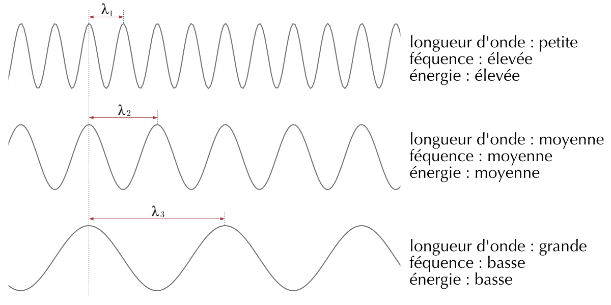
La longuer d’onde est exprimée en nanomètre, nm, pour les ondes lumineuses. La fréquence est exprimée en Hertz, Hz, le nombre de cycles par seconde. Longueur d’onde et fréquence sont inversément proportionnelles. Plus la longueur d’onde est élevée, plus la fréquence est basse. Plus la longueur d’onde est petite, plus la fréquence est élevée.
La relation de Planck permet de mettre en relation la fréquence et l’énergie d’un photon selon l’équation :
\[ \begin{split} E = h \cdot \nu \end{split} \qquad \text{ou} \qquad \begin{split} E = h \cdot \frac{c}{\lambda} \end{split} \qquad \begin{split} E & \text{ : énergie du photon, en } \text{ J} \\ h & \text{ : constante de Planck, } 6.625 \cdot 10^{-34}\ \text{ J}\cdot\text{s} \\ \nu & \text{ : fréquence, en } \text{ Hz} \\ \lambda & \text{ : longueur d'onde, en } \text{ m} \\ c & \text{ : vitesse de la lumière, } 3 \cdot 10^{8}\ \text{ m}\cdot\text{s}^{-1} \end{split} \]
Une lumière verte a une longueur d’onde de 550 nm. On rappelle : \(c = 3\cdot10^{8}\) m/s et \(h = 6.625\cdot10^{-34}\) J·s.
- Convertissez cette longueur d’onde en mètres.
- Calculez la fréquence de cette lumière.
- Calculez l’énergie d’un photon de cette lumière.
- \(\lambda = 550 \text{ nm} = 550\cdot10^{-9} \text{ m} = 5.50\cdot10^{-7} \text{ m}\).
- \[ \nu = \frac{c}{\lambda} = \frac{3\cdot10^{8}}{5.50\cdot10^{-7}} = 5.45\cdot10^{14} \text{ Hz} \]
- \[ E = h \cdot \nu = 6.625\cdot10^{-34} \cdot 5.45\cdot10^{14} = 3.61\cdot10^{-19} \text{ J} \]
6.2.3 Le spectre électromagnétique
L’analyse du rayonnement émis ou absorbé par la matière s’appelle la spectroscopie.
Le spectre électromagnétique regroupe l’ensemble de toutes les ondes électromagnétiques en fonction de leur longueur d’onde et de leur fréquence.
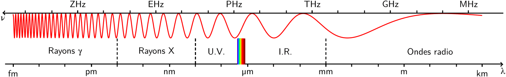
crédit : wikimedia/Benjamin ABEL
Les ondes électromagnétiques sont classées en différentes catégories selon leur longueur d’onde. Les plus connues sont celles de la lumière visible (entre 400 et 750 nm, environ) mais il existe d’autres rayonnements que l’oeil ne perçoit pas.
| couleur | longueur d’onde nm | fréquence 1014 Hz | énergie eV |
|---|---|---|---|
| violet | 400 | 7.50 | 3.10 |
| bleu | 450 | 6.66 | 2.75 |
| cyan | 500 | 5.99 | 2.48 |
| vert | 550 | 5.45 | 2.25 |
| jaune | 580 | 5.16 | 2.14 |
| orange | 600 | 5.00 | 2.06 |
| rouge | 650 | 4.62 | 1.91 |
6.2.4 Interactions rayonnement-matière
Nous sommes régulièrement confrontés à des interactions entre la matière (les atomes) et un rayonnement électromagnétique. Par exemple, un morceau de fer chauffé va émettre un rayonnement électromagnétique différent selon la température à laquelle il est porté. On peut aussi voir l’absorption de rayonnement comme lors d’une radiographie au rayons X. Les os absorbent les rayons X alors que les tissus mous (peau, graisse, muscles) sont quasiment transparents aux rayons X.
Des ondes électromagnétiques peuvent être absorbées par un électron augmentant ainsi son niveau d’énergie au-delà de son état fondamental. Toutefois, un électron n’absorbera une onde que si celle-ci lui permet d’atteindre un niveau d’énergie bien précis. On parlera alors de transition électronique et si l’électron évolue vers un état d’énergie plus élevé, on parlera d’excitation électronique.
Un électron qui se trouve dans un état d’énergie supérieure à celle de l’état fondamental va avoir tendance à évoluer vers un état d’énergie plus faible avec l’émission d’une onde électromagnétique. L’électron va donc perdre de l’énergie en éjectant un photon qui possède exactement la différence d’énergie entre les deux états.
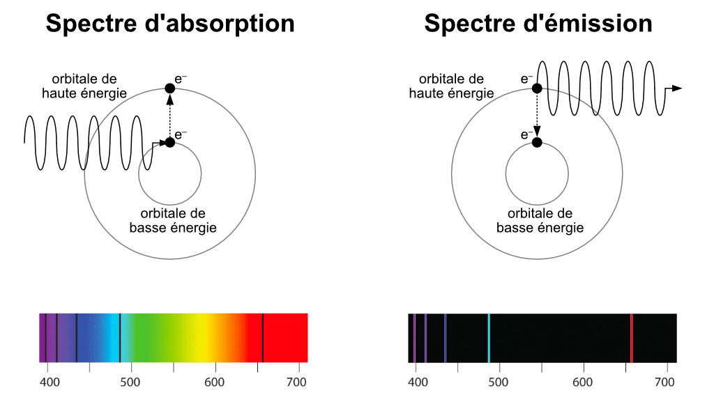
L’électron absorbe de l’énergie tout en restant au sein de l’atome et finira toujours par la réémettre sous forme d’une onde électromagnétique. La mesure de ces quantités de lumière émises ou absorbées forment le principe de base de la spectroscopie.
Répondez aux questions suivantes sur l’interaction entre la lumière et les électrons.
- Qu’appelle-t-on une transition électronique ?
- Un électron qui passe de l’état fondamental à un état excité absorbe-t-il ou émet-il un photon ?
- Un électron qui revient d’un état excité vers l’état fondamental absorbe-t-il ou émet-il un photon ?
- Quelle relation y a-t-il entre l’énergie du photon échangé et les deux niveaux d’énergie de l’électron ?
- C’est le passage d’un électron d’un niveau d’énergie à un autre au sein de l’atome.
- Il absorbe un photon : il gagne de l’énergie, c’est une excitation.
- Il émet un photon : il perd de l’énergie.
- L’énergie du photon absorbé ou émis est exactement égale à la différence d’énergie entre les deux niveaux.
6.3 Les orbitales atomiques
Dans les années 1900 Schrödinger développe un modèle atomique plus évolué en utilisant la mécanique quantique, le modèle standard.
Ce modèle introduit une description mathématique du mouvement de l’électron appelée orbitale atomique. Une orbitale représente un volume de l’espace dans lequel la probabilité de trouver un électron est élevée.
| couche | sous-couche | orbitales | électrons | total électrons |
|---|---|---|---|---|
| 1 | s | 1 | 2 | 2 |
| 2 | s | 1 | 2 | 8 |
| p | 3 | 6 | ||
| 3 | s | 1 | 2 | 18 |
| p | 3 | 6 | ||
| d | 5 | 10 | ||
| 4 | s | 1 | 2 | 32 |
| p | 3 | 6 | ||
| d | 5 | 10 | ||
| f | 7 | 14 |
Selon ce modèle, les électrons d’un atome gravitent autour de l’atome à des niveaux d’énergie différents. Ces niveaux sont appelés couches et sont situés à différentes distances du noyau. Les couches sont numérotées de 1 à 7 et plus le numéro de la couche est petit, plus la couche est proche du noyau.
Dans une couche les électrons sont distribués en sous-couches d’énergie légèrement différentes. On note les sous-couches avec les lettres s, p, d, f et chacune représente une forme d’orbitale différente.
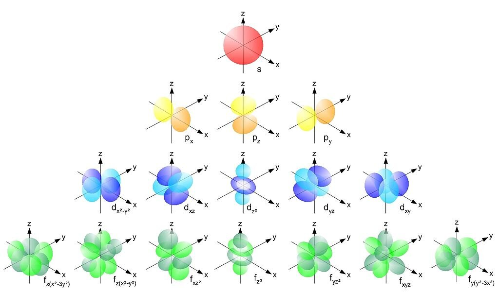
crédit : wikimedia/haade
Les électrons d’une sous-couche peuvent être répartis dans des volumes d’énergie égale appelés orbitales. Il y a une orbitale pour une sous-couche s, trois orbitales pour une p, cinq pour une d, sept pour un f. Une orbitale ne peut être occupée que par deux électrons.
6.3.1 La configuration électronique
La manière dont les électrons sont répartis dans les différentes orbitales peut être représenté par un diagramme des orbitales atomiques. Dans ce type de diagramme, les orbitales sont représentées par des cases dans lesquels on place les électrons à disposition. L’orbitale 1s a le niveau d’énergie le plus bas et est la plus proche du noyau.
On utilise ce diagramme pour prédire les liaisons qui se produisent entre deux atomes et pour montrer pourquoi certains éléments se comportent de la même façon.
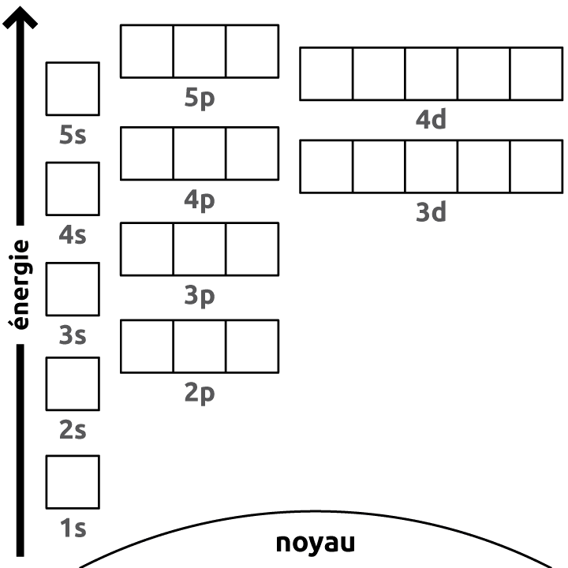
6.3.2 Déterminer une configuration électronique
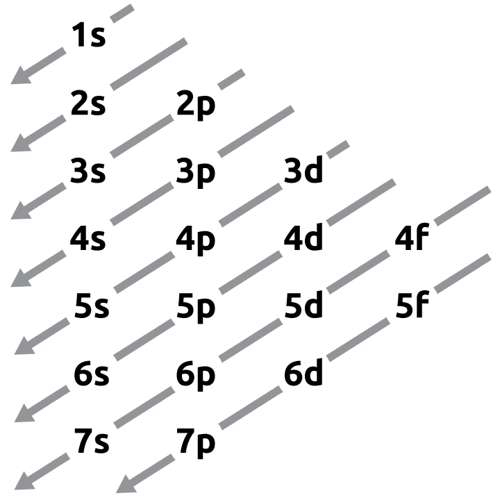
En connaissant le nombre d’électrons contenus dans un atome, on peut remplir ce diagramme en respectant certaines règles:
- Les électrons sont placés dans la sous-couche disponible de plus basse énergie.
- On peut placer au maximum 2 électrons dans une orbitale (exclusion de Pauli).
- La Figure 6.8 donne l’ordre de remplissage des orbitales (principe Aufbau).
- Si plusieurs orbitales de même énergie sont disponibles, on remplit le plus d’orbitales possibles avant d’apparier les électrons.
Une fois le diagramme rempli, on en déduit la configuration électronique de l’atome pour le niveau de plus basse énergie. La configuration électronique d’un atome est une notation abrégée de la répartition des électrons dans les différentes couches et sous-couches électroniques.
A l’aide des diagrammes suivants, déterminez la configuration électronique de l’atome de carbone et celle de l’atome de sodium :
| atome de carbone | atome de sodium |
|---|---|
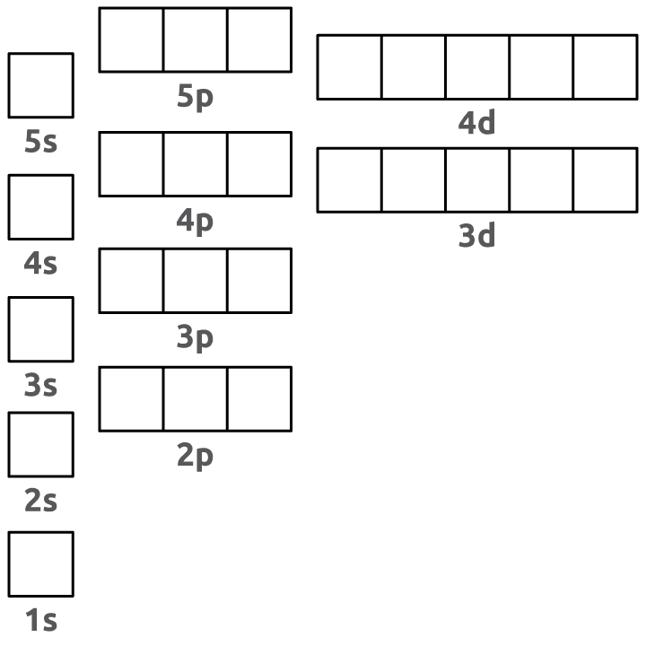 |
|
| nombre d’électrons : | nombre d’électrons : |
| structure électronique : | structure électronique : |
- atome de carbone
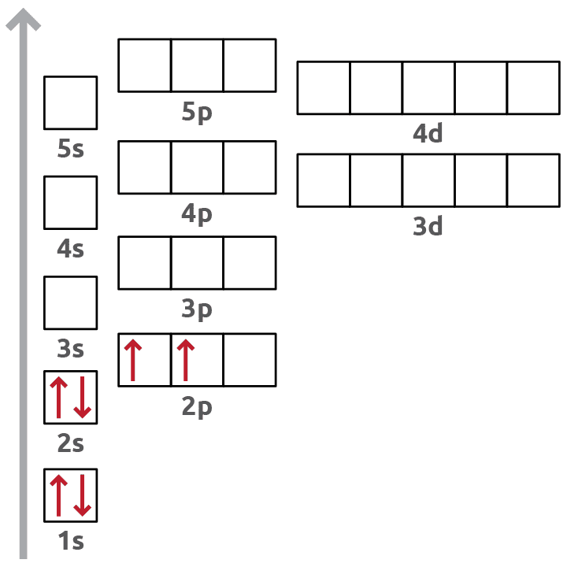
- nombre d’électrons : 6
- structure électronique : \(1s^2 2s^2 2p^2\)
- atome de sodium
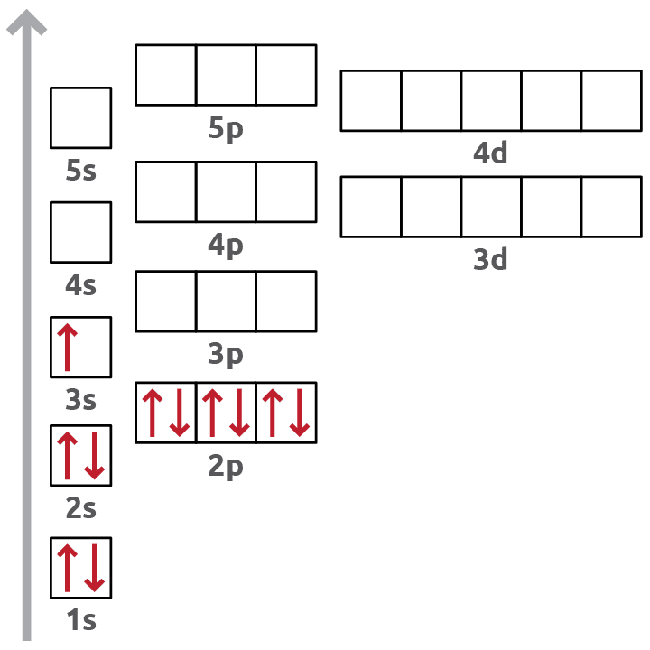
- nombre d’électrons : 11
- structure électronique : \(1s^2 2s^2 2p^6 3s^1\)
Pour simplifier la notation de la configuration électronique, on indique que les électrons de la dernière couche électronique. On remplace les autres couches par le symbole du gaz rare le plus proche entre crochets. Par exemple, la structure électronique du chlore (Cl) :
\[ \underbrace{1s^{2}~2s^{2}~2p^{6}}_{\text{Néon}}~3s^{2}~3p^{5} \text{ devient } [Ne]~3s^{2}~3p^{5} \]
| Groupe | Elément | Conf. électronique | Elément | Conf. électronique |
|---|---|---|---|---|
| I | Li | [He] \(2s^{1}\) | Na | [Ne] \(3s^{1}\) |
| II | Be | [He] \(2s^{2}\) | Mg | [Ne] \(3s^{2}\) |
| III | B | [He] \(2s^{2}~2p^{1}\) | Al | [Ne] \(3s^{2}~3p^{1}\) |
| IV | C | [He] \(2s^{2}~2p^{2}\) | Si | [Ne] \(3s^{2}~3p^{2}\) |
| V | N | [He] \(2s^{2}~2p^{3}\) | P | [Ne] \(3s^{2}~3p^{3}\) |
| VI | O | [He] \(2s^{2}~2p^{4}\) | S | [Ne] \(3s^{2}~3p^{4}\) |
| VII | F | [He] \(2s^{2}~2p^{5}\) | Cl | [Ne] \(3s^{2}~3p^{5}\) |
| VIII | Ne | [He] \(2s^{2}~2p^{6} \equiv\) [Ne] | Ar | [He] \(3s^{2}~3p^{6} \equiv\) [Ar] |
Pour chacun des éléments suivants, écrivez la configuration électronique complète, puis la configuration simplifiée (à l’aide du gaz rare précédent).
- l’azote (N, Z = 7)
- le magnésium (Mg, Z = 12)
- le chlore (Cl, Z = 17)
- le potassium (K, Z = 19)
- N : \(1s^{2}\,2s^{2}\,2p^{3}\) \(\equiv\) [He]\(\,2s^{2}\,2p^{3}\)
- Mg : \(1s^{2}\,2s^{2}\,2p^{6}\,3s^{2}\) \(\equiv\) [Ne]\(\,3s^{2}\)
- Cl : \(1s^{2}\,2s^{2}\,2p^{6}\,3s^{2}\,3p^{5}\) \(\equiv\) [Ne]\(\,3s^{2}\,3p^{5}\)
- K : \(1s^{2}\,2s^{2}\,2p^{6}\,3s^{2}\,3p^{6}\,4s^{1}\) \(\equiv\) [Ar]\(\,4s^{1}\)
La configuration électronique du niveau de plus basse énergie est appelée état fondamental. Les configurations dont la distribution des électrons est différente de l’état fondamental sont appelées états excités.
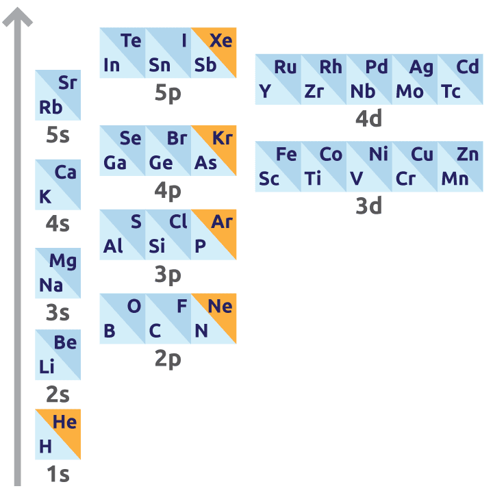
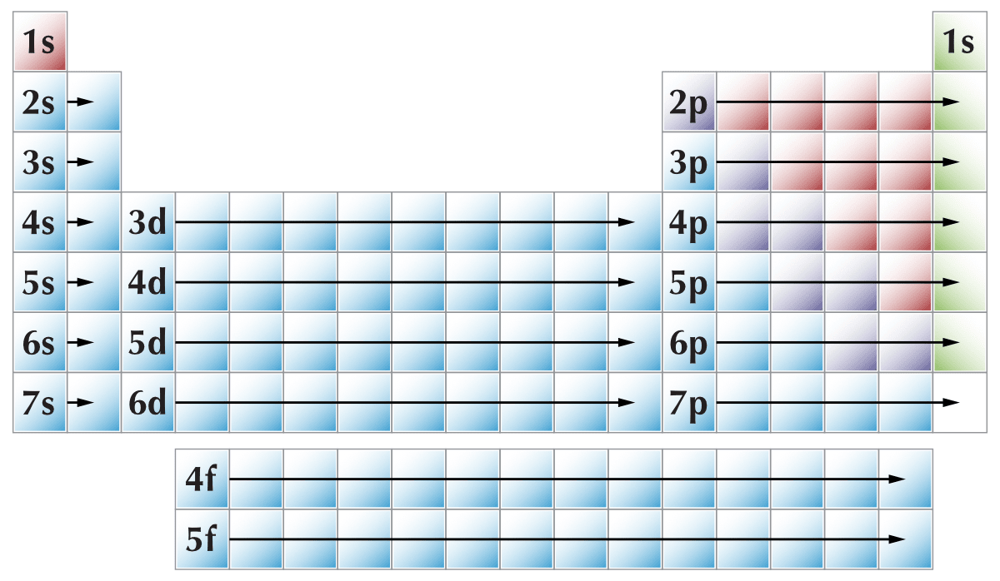
6.4 Les électrons de valence
Les électrons de valence
Les électrons de valence sont les électrons de la dernière couche électronique d’un atome.
Lorsqu’un chimiste étudie une réaction, il étudie les électrons transféré entre les acteurs de la réaction. Les électrons dont le niveau d’énergie est le plus éloigné du noyau seront retenus de manière moins forte. Ce sont donc ces électrons qui seront impliqués dans les réactions.
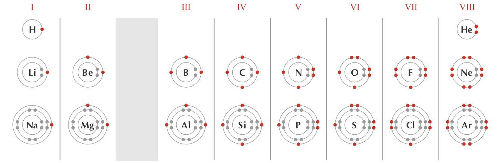
Pour chaque élément, donnez le nombre d’électrons de valence et le groupe auquel il appartient.
- le sodium (Na)
- le carbone (C)
- l’oxygène (O)
- le fluor (F)
- le néon (Ne)
- sodium : 1 électron de valence, groupe I
- carbone : 4 électrons de valence, groupe IV
- oxygène : 6 électrons de valence, groupe VI
- fluor : 7 électrons de valence, groupe VII
- néon : 8 électrons de valence, groupe VIII
Le chimiste américain G. N. Lewis (1875-1946) a proposé un moyen simple de représenter les électrons de valence d’un atome. C’est ce qu’on appelle la structure de Lewis.
On utilise les règles suivantes pour dessiner la structure de Lewis d’un atome:
- Le nombre d’électrons de valence est égal au numéro du groupe (I à VIII).
- On place un point à la fois sur chacun des quatre côtés du symbole de l’élément.
- On continue d’ajouter des points, en les appariant, jusqu’à ce que tous les électrons de valence soient utilisés.
| I | II | III | IV | V | VI | VII | VIII |
|---|---|---|---|---|---|---|---|
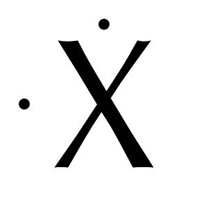 |
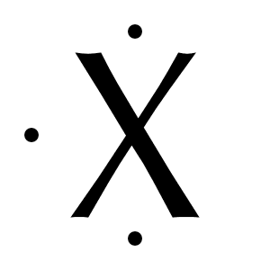 |
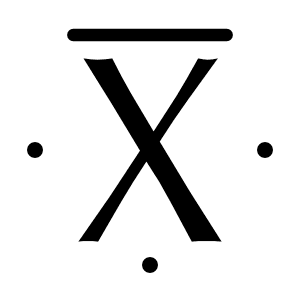 |
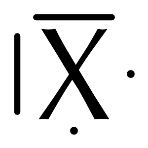 |
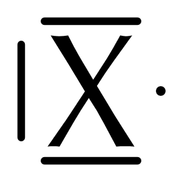 |
|||
| 1c | 2c | 3c | 4c | 1p 3c | 2p 2c | 3p 1c | 4p |
Dessinez la structure de Lewis des éléments des trois premières périodes.
| I | II | II | IV | V | VI | VII | VII |
|---|---|---|---|---|---|---|---|
| Hydrogène | Hélium | ||||||
| Lithium | Béryllium | Bore | Carbone | Azote | Oxygène | Fluor | Néon |
| Sodium | Magnésium | Aluminium | Silicium | Phosphore | Soufre | Chlore | Argon |
Jeu en ligne — Entraînez-vous à trouver la bonne structure de Lewis à partir des informations fournies sur isotope.ch/lewis.
6.5 La règle de l’octet
Les gaz rares (groupe VIII) sont très peu réactifs car ils ont une très grande stabilité électronique. Ceci est dû au fait que leur couche électronique de valence est complètement remplie avec huit électrons, à l’exception de l’hélium, qui en a deux.
Cette observation a conduit à une règle connue sous le nom de règle de l’octet.
Règle de l’octet
Les atomes ont tendance à gagner, perdre, ou partager des électrons pour avoir huit électrons dans leur couche de valence.
Le remplissage complet de la couche électronique de valence est le moteur des réactions chimiques.
6.6 Les ions
Ion
Un ion est un atome ou un groupe d’atomes qui a gagné ou perdu un ou plusieurs électrons.
Les atomes qui perdent un ou plusieurs électrons ont un excédent de charge positive et sont appelés cations.
6.6.1 Le cation ou la perte d’électrons
Prenons, par exemple, le sodium. Son numéro atomique est égal à 11, il contient 11 protons et comme l’atome est neutre, il contient également 11 électrons. Avec un électron en moins, l’atome est constitué de 11 protons et 10 électrons. Il a donc une charge positive en excès. il devient un cation. On écrira le cation sodium Na+.
\[ \begin{split} Na \rightarrow Na^+ + 1e^- \end{split} \qquad \begin{split} 11\:p^{+}\:+\:10\:e^{-}\:=\:\text{1 charge positive}\:=\:+1 \end{split} \]
Les atomes qui ont des configurations électroniques équivalentes sont appelés isoélectroniques. Le cation sodium est isoélectronique avec le néon.
6.6.2 L’anion ou le gain d’électrons
Les atomes qui gagnent un ou plusieurs électrons ont un excédent de charge négative et sont appelés anions.
Prenons, par exemple, le chlore. Son numéro atomique est égal à 17, il contient 17 protons et 17 électrons. Avec un électron en plus, l’atome est constitué de 17 protons et 18 électrons. Il a donc une charge négative en excès. il devient un anion. On écrira l’anion chlore Cl-.
\[ \begin{split} Cl + 1e^- \rightarrow Cl^- \end{split} \qquad \begin{split} 17\:p^{+}\:+\:18\:e^{-}\:=\:\text{1 charge négative}\:=\: -1 \end{split} \]
L’anion chlore est isoélectronique avec l’argon.
Déterminer quelle sera la charge des atomes correspondant aux description suivante:
- Un atome ayant perdu deux électrons
- Un atome ayant gagné un électron
- Un atome ayant perdu trois électrons
- Un atome ayant gagné deux électrons
- Un atome ayant perdu un électron
- Un atome ayant gagné trois électrons
- 0 - (2e-) = +2
- 0 + (1e-) = -1
- 0 - (3e-) = +3
- 0 + (2e-) = -2
- 0 - (1e-) = +1
- 0 + (3e-) = -3
6.6.3 Les ions stables - groupe A
Le gain ou la perte de un, deux, ou parfois même trois électrons est possible, mais en général, un atome ne perd ou ne gagne pas plus de trois électrons.
La règle de l’octet nous indique qu’un atome avec huit électrons dans sa couche électronique de valence devient énergétiquement stable. Les ions stables formés par les atomes sont donc ceux qui confirment la règle de l’octet.
Dans le tableau périodique, les chiffres romains des groupes A indiquent le nombre d’électrons de valence de chaque élément. On peut utiliser la position d’un élément dans le tableau pour déterminer quel sera l’ion stable formé par cet élément.
Représenter sous leur forme symbolique les ions stables formés par les éléments des périodes n°2 et n°3.
| I | II | II | IV | V | VI | VII | VII |
|---|---|---|---|---|---|---|---|
| Lithium | Béryllium | Bore | Carbone | Azote | Oxygène | Fluor | Néon |
| Sodium | Magnésium | Aluminium | Silicium | Phosphore | Soufre | Chlore | Argon |
6.6.4 Les ions des éléments de transition - groupe B
Déterminer l’ion stable formé par les métaux de transition est plus difficile car ces éléments ne gagneront ou ne perderont pas toujours le même nombre d’électrons.
Les éléments de transition ne respectent pas la règle de l’octet, mais une autre règle appelée la règle des 18 électrons. Nous n’aborderons pas cette règle dans le cadre de ce cours.
6.7 Résumé
- Dans le tableau périodique, les éléments sont classés par numéro atomique croissant ; les lignes sont les périodes et les colonnes les familles ou groupes. Les éléments d’une même famille ont des propriétés chimiques semblables.
- On distingue les métaux, les non-métaux et les métalloïdes, aux propriétés intermédiaires.
- La lumière est une onde électromagnétique caractérisée par sa longueur d’onde \(\lambda\) et sa fréquence \(\nu\), inversement proportionnelles (\(c = \lambda\cdot\nu\)).
- Le spectre électromagnétique classe les ondes selon leur longueur d’onde ; la lumière visible s’étend d’environ 400 nm (violet) à 750 nm (rouge).
- Un électron peut absorber un photon pour passer à un niveau d’énergie supérieur ou émettre un photon en revenant à un niveau inférieur ; l’énergie du photon est égale à la différence entre les deux niveaux.
- Les électrons se répartissent autour du noyau en couches, sous-couches et orbitales.
- La configuration électronique s’obtient en remplissant les sous-couches par énergie croissante.
- Les électrons de valence sont ceux de la dernière couche ; leur nombre correspond au numéro de groupe (I à VIII). La structure de Lewis les représente par des points autour du symbole.
- La règle de l’octet : les atomes tendent à posséder 8 électrons de valence en gagnant, perdant ou partageant des électrons.
- Un ion est un atome ayant gagné ou perdu des électrons : un cation (charge positive) résulte d’une perte, un anion (charge négative) d’un gain.
6.8 Exercices supplémentaires
- Donnez le symbole des éléments suivants : Magnésium, Potassium, Fer, Cuivre
- Quel est le nom des éléments suivants : C, Cl, Au, Sb
- Dans quelle période se trouvent les éléments suivants : He, Ge, Rb, I
- Dans quel groupe se trouvent les éléments suivants : Soufre, Iode, Ca, Sn
- Proposez le symbole d’un élément correspondant à chacune des descriptions suivantes :
- un halogène
- un non-métal
- un métal alcalin
- un élément de transition
- un gaz rare
- un métal alcalino-terreux
- Donnez le symbole des éléments suivants :
Magnésium : Mg / Potassium : K / Fer : Fe / Cuivre : Cu - Quel est le nom des éléments suivants :
C : Carbone- Cl : Chlore / Au : Or / Sb : Antimoine - Dans quelle période se trouvent les éléments suivants :
He : 1 / Ge : 4 / Rb : 5 / I : 5 - Dans quel groupe se trouvent les éléments suivants : Soufre : VI / Iode : VII / Ca : II / Sn : IV
- Exemples possibles : un halogène : Cl / un non-métal : O / un métal alcalin : Na / un élément de transition : Fe / un gaz rare : Ne / un métal alcalino-terreux : Ca
Pour chaque descritpion ci-dessous, déterminez la charge de l’atome, indiquez si l’élément est un cation ou un anion et donnez son symbole.
- un atome de magnésium avec 12 protons et 10 électrons
- un atome de fluor avec 9 protons et 10 électrons
- un atome de lithium avec 3 protons et 2 électrons
- un atome de soufre avec 16 protons et 18 électrons
- +2, cation, \(Mg^{2+}\)
- -1, anion, \(F^-\)
- +1, cation, \(Li^+\)
- -2, anion, \(S^{2-}\)
Donnez le nom et le symbole des éléments qui correspondent aux descriptions suivantes.
- 27 protons dans le noyau de chaque atome
- 50 électrons dans chaque atome neutre
- 18 électrons dans chaque cation +2
- 10 électrons dans chaque anion -1
- Cobalt / Co
- Étain / Sn
- Calcium / Ca
- Fluor / F
Indiquer le nombre de protons, de neutrons et d’électrons de chacune des espèces suivantes.
- \(^{90}Sr\)
- \(^{41}K\)
- \(^{75}_{33}As\)
- \(^{32}_{15}P\)
- \(^{90}As^{2+}\)
- \(^{34}_{16}S^{2-}\)
- \(^{90}Sr\) : 38 \(p^+\) / 52 \(n\) / 38 \(e^-\)
- \(^{41}K\) : 19 \(p^+\) / 22 \(n\) / 19 \(e^-\)
- \(^{75}_{33}As\) : 33 \(p^+\) / 42 \(n\) / 33 \(e^-\)
- \(^{32}_{15}P\) : 15 \(p^+\) / 17 \(n\) / 15 \(e^-\)
- \(^{90}As^{2+}\) : 33 \(p^+\) / 57 \(n\) / 31 \(e^-\)
- \(^{34}_{16}S^{2-}\) : 16 \(p^+\) / 18 \(n\) / 18 \(e^-\)
Dessinez le symbole de Lewis de chacun des éléments suivants : Al, Br, Ar, Ca.
Le nombre d’électrons de valence est donné par le numéro de groupe.
- Al (groupe III) : 3 électrons de valence, soit 3 points célibataires (3c).
- Br (groupe VII) : 7 électrons de valence, soit 3 paires et 1 célibataire (3p 1c).
- Ar (groupe VIII) : 8 électrons de valence, soit 4 paires (4p).
- Ca (groupe II) : 2 électrons de valence, soit 2 points célibataires (2c).
A l’aide du tableau périodique, indiquez quel sera l’ion stable formé par les éléments suivants : Na, Mg, Cl, K, Al, S, Ca, Ga.
- Na : \(Na^+\)
- Mg : \(Mg^{2+}\)
- Cl : \(Cl^-\)
- K : \(K^+\)
- Al : \(Al^{3+}\)
- S : \(S^{2-}\)
- Ca : \(Ca^{2+}\)
- Ga : \(Ga^{3+}\)
Lorsqu’un électron excité d’un atome revient vers un niveau d’énergie plus bas, il émet un photon. On observe une raie d’émission de longueur d’onde 650 nm. Données : \(c = 3\cdot10^{8}\) m/s, \(h = 6.625\cdot10^{-34}\) J·s.
- À quelle couleur correspond cette raie ? (voir le domaine du spectre visible)
- Calculez la fréquence puis l’énergie du photon émis.
- L’électron a-t-il absorbé ou émis de l’énergie ? Que représente l’énergie du photon par rapport aux niveaux de l’électron ?
- Une autre raie du même atome a une longueur d’onde de 400 nm. Le photon correspondant est-il plus ou moins énergétique que celui à 650 nm ? Justifiez sans calcul.
- 650 nm correspond au rouge.
- \[ \nu = \frac{c}{\lambda} = \frac{3\cdot10^{8}}{6.50\cdot10^{-7}} = 4.62\cdot10^{14} \text{ Hz} \] \[ E = h\cdot\nu = 6.625\cdot10^{-34}\cdot4.62\cdot10^{14} = 3.06\cdot10^{-19} \text{ J} \]
- L’électron a émis de l’énergie, puisqu’il est revenu vers un niveau plus bas. L’énergie du photon est égale à la différence d’énergie entre les deux niveaux.
- Plus énergétique : une longueur d’onde plus courte (400 nm) correspond à une fréquence plus élevée, donc à une énergie plus grande, car \(E = h\cdot c/\lambda\) augmente quand \(\lambda\) diminue.
On étudie l’élément soufre (S, Z = 16). À l’aide du tableau périodique, déterminez :
- sa période et son groupe ;
- sa configuration électronique complète et simplifiée ;
- son nombre d’électrons de valence ;
- sa structure de Lewis (nombre de points, paires et célibataires) ;
- l’ion stable qu’il forme, en justifiant par la règle de l’octet.
- Période 3, groupe VI.
- Complète : \(1s^{2}\,2s^{2}\,2p^{6}\,3s^{2}\,3p^{4}\) ; simplifiée : [Ne]\(\,3s^{2}\,3p^{4}\).
- 6 électrons de valence (groupe VI).
- 6 points autour du symbole : 2 paires et 2 célibataires (2p 2c).
- Le soufre gagne 2 électrons pour compléter sa couche de valence à 8 électrons (octet). Il forme l’ion \(S^{2-}\), isoélectronique avec l’argon.
On considère les éléments suivants : soufre (S), chlore (Cl), potassium (K) et calcium (Ca).
- Donnez l’ion stable formé par chacun de ces éléments.
- Pour chaque ion, indiquez son nombre d’électrons.
- Ces quatre ions ont-ils quelque chose en commun ? Avec quel gaz rare sont-ils isoélectroniques ?
- \(S^{2-}\), \(Cl^{-}\), \(K^{+}\) et \(Ca^{2+}\).
- Nombre d’électrons de chaque ion :
- \(S^{2-}\) : \(16 + 2 = 18\) électrons
- \(Cl^{-}\) : \(17 + 1 = 18\) électrons
- \(K^{+}\) : \(19 - 1 = 18\) électrons
- \(Ca^{2+}\) : \(20 - 2 = 18\) électrons
- Les quatre ions possèdent tous 18 électrons : ils sont isoélectroniques entre eux et avec l’argon (Z = 18), dont la couche de valence respecte l’octet.
On compare trois rayonnements électromagnétiques par leur longueur d’onde : une onde radio (1 m), une lumière visible bleue (450 nm) et un rayon X (\(1\cdot10^{-10}\) m). Données : \(c = 3\cdot10^{8}\) m/s, \(h = 6.625\cdot10^{-34}\) J·s.
- Classez ces trois rayonnements de la fréquence la plus basse à la plus élevée.
- Lequel transporte les photons les plus énergétiques ? Justifiez.
- Calculez l’énergie d’un photon de lumière bleue (450 nm).
- La fréquence est inversement proportionnelle à la longueur d’onde (\(\nu = c/\lambda\)). De la plus basse à la plus élevée : \[ \text{onde radio (1 m)} < \text{bleu (450 nm)} < \text{rayon X } (1\cdot10^{-10} \text{ m}) \]
- Le rayon X : il a la plus courte longueur d’onde, donc la plus haute fréquence et l’énergie par photon la plus grande (\(E = h\cdot c/\lambda\)).
- \[ E = \frac{h\cdot c}{\lambda} = \frac{6.625\cdot10^{-34}\cdot3\cdot10^{8}}{4.50\cdot10^{-7}} = 4.42\cdot10^{-19} \text{ J} \]